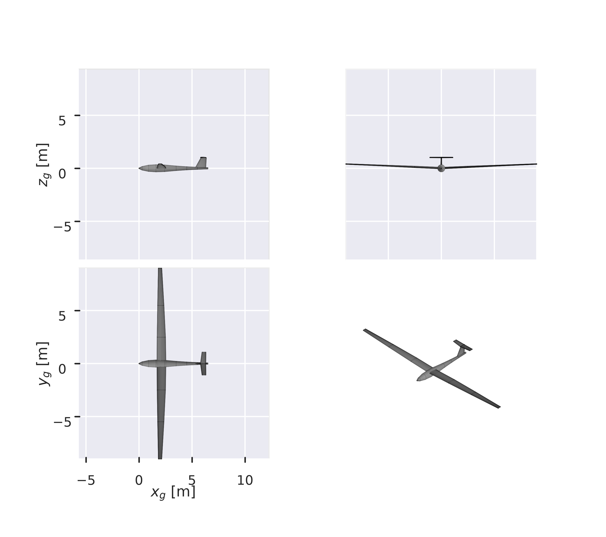

What does the reconstructed Discus-2c geometry look like?
Show code
import aerosandbox.tools.pretty_plots as asbpltaspect_ratio = WING.aspect_ratio()taper = STATION_C[-1] / STATION_C[0]tail_arm =5.80+0.25*0.50- XYZ_REF[0]arms_per_chord = tail_arm / MAC# The planform was scaled to hit the published reference area exactly, so this# is a real check on the scaling rather than a restatement of an input.assertabs(WING.area() - WING_AREA) / WING_AREA <0.01, "planform area drifted"assertabs(aspect_ratio - SPAN**2/ WING_AREA) <0.1, "aspect ratio inconsistent"
Answer. An 18.0 m span wing of aspect ratio 28.55 on a slender fuselage with a T-tail (Figure 1). The root chord of 0.840 m tapers to 0.315 m, a taper ratio of 0.37, for a mean aerodynamic chord of 0.673 m. The tail sits 5.9 mean chords aft of the centre of gravity.
WarningThe shape is inferred, not published
Span and area are published and the planform is scaled to match them exactly. Everything you can see here — how chord is distributed, the fuselage section, the tail — is chosen, not known.
Show code
fig, axs = asbplt.figure3d(nrows=2, ncols=2, figsize=(7.0, 5.2), computed_zorder=False)AIRPLANE.draw_three_view(axs=axs, show=False)# draw_three_view() leaves matplotlib's default tick density on axes this# narrow, and at 18 m span the x labels run into each other.for ax in axs.flat: ax.locator_params(nbins=4)plt.show()

Figure 1: Three views and an isometric of the reconstructed Discus-2c. Top view shows the four-station planform; front view shows 2.5° dihedral. Drawn from the same geometry every entry in this chapter runs.